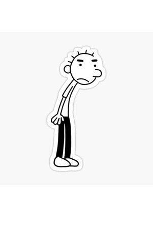

He is the father. He is a classic example of a well-meaning but clueless parent. Because he is being a bit old-school in his parenting style, so he believes in giving tough love and trying to teach his sons valuable life lessons—though it is usually in a way that Greg finds overbearing or embarrassing.
Susan Heffley
She is the mother, the more caring and optimistic parent in the family. She is the type of mom who wants her children to succeed and grow up with strong values. She is always pushin her kids to be their best, often leading to humorous situations where Greg finds her overbearing. She is also very focused on health and wellness.

Rodrick Heffley
As the oldest son in this family, he is the rebellious, lazy, and often mischievous older brother who loves to torment Greg. He is in his teenage years and has a "cool" but indifferent attitude. Rodrick is a teenage troublemaker, often skipping school, getting into trouble, and annoying Greg. Despite his rough exterior, he is not a bad person at heart.
Greg Heffley
He is the main protagonist character in this story. The middle child of the Heffley family, and the series follows his awkward, sarcastic, and sometimes self-centered journey through adolescence. He is not outgoing, and he often finds himself in embarrassing situations. Greg tends to overthink things and has a bit of a selfish streak, but he is also relatable, making him a classic "wimpy" kid trying to figure out life.
Manny Heffley
The youngest, spoiled, and adorable younger brother. He is the baby of the family, quite young, hs presence adds a lot of chaos. Manny often gets treated like a little king by his mom and can do no wrong in her eyes. He is cute, but his antics often irritate Greg, especially when he is the one left to take care of him.